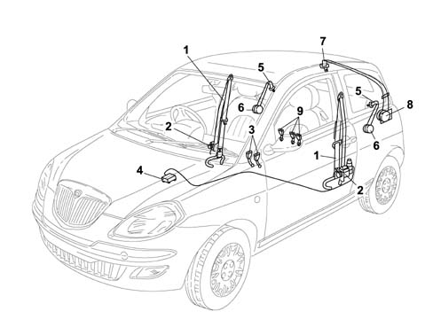

Introduction - SEAT BELTS AND ACCESSORIES
- Path
- Descriptions > 70 FITTINGS > 7065 SEAT BELTS AND ACCESSORIES > Introduction - SEAT BELTS AND ACCESSORIES
- Kind
- system description
- Applies to
- all engines; all production periods
- Interactive page
- https://sloeber94.github.io/elrnDB-lYpsln/en/#/2429868
Applies to: all engines; all production periods
The car is fitted with seat belts with three anchorage points. As an option, the third rear passenger seat can also be fitted with a belt with automatic inertia reel.
The height-adjustable front seat belts are fitted with electrically-operated pretensioners with load limiter. There is a sensor, on the branch anchoring the belt to the driver's seat which warns when the seat belt is not fastened by means of a warning light in the instrument panel (with the ignition ON).
The side rear seats are fitted with seat belts with three anchorage points and inertia reel fitted to the roof panel pillars. Standard equipment for the rear seat is a lap belt with two anchorage points without reel. As an option, the car can be fitted with a seat belt with three anchorage points and inertia reel in conjunction with a third head restraint.
Applies to: all engines; all production periods
View of seat belt on car

1 - Front seat belts 2 - Electrically-controlled pretensioners 3 - Front belt anchorage branches 4 - Air bag control unit 5 - Side rear seat belts 6 - Side inertia reel seat belts 7 - Central rear seat belt 8 - Central inertia reel seat belt 9 - Rear belt anchorage branches
Applies to: all engines; all production periods
REEL WITH PRETENSIONER AND LOAD LIMITER
The front seat belt reels are fitted with electrically-activated pretensioners controlled by the air bag control unit 5580C air bag system, with a load limiting device. This device was introduced to increase passive safety, and consists of a torsion bar that allows controlled yield during the restraining action in order to modulate the force acting on the shoulders.
Applies to: all engines; all production periods
REAR CENTRAL SEAT BELT REEL
The rear central seat belt reel is located inside the left rear pillar trim anchored to the structure above the wheel arch.